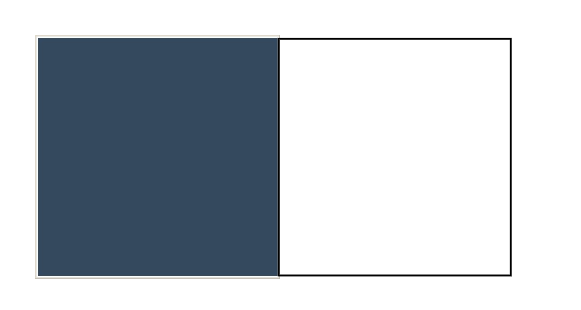
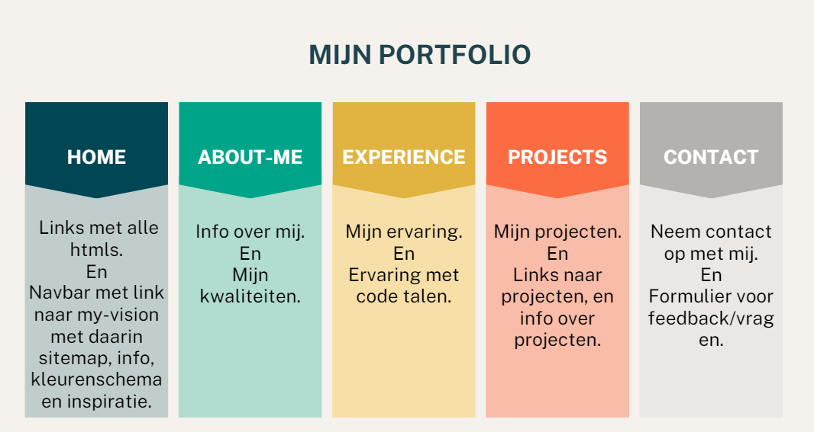

Mijn portfolio gaat over mij, mijn ervaring en mijn projecten. Zo krijg je een beter beeld bij mijn kunnen als beginnend Software Developer. Ook kan je mij benaderen via de contact pagina door mij feedback te geven of vragen te stellen. Ook kun je mijn weg naar dit Portfolio toe zien doormiddel van de My Vision html daar kun je zien wat mijn inspiratie was, maar ook mijn kleurenschema die ik gekozen heb en mijn sitemap die ik gemaakt heb.
Hieronder zie je enkele screenshots van websites, ontwerpen, of andere inspiratiebronnen die ik heb gebruikt bij het ontwikkelen van mijn portfolio.
Hier zie je een screenshot van het kleurenschema dat ik heb gekozen voor mijn website.
Hieronder zie je de sitemap van mijn portfolio website, die de structuur en navigatie toont.
